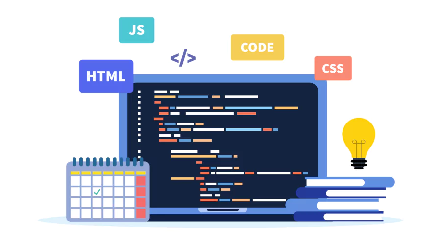

Modern technology has made this skill more accessible than ever through interactive platforms like freeCodeCamp,Codecademy, and W3Schools. Aspiring developers can now leverage AI coding assistants like GitHub Copilot or Cursor to explain complex logic and debug errors in real-time, accelerating the learning curve. Despite these advanced tools, the core of success remains consistent practice and a growth mindset that views every bug or error as a valuable lesson rather than a failure.
Coding in web development
Above are few career paths in web development
To start coding, you can do the following things